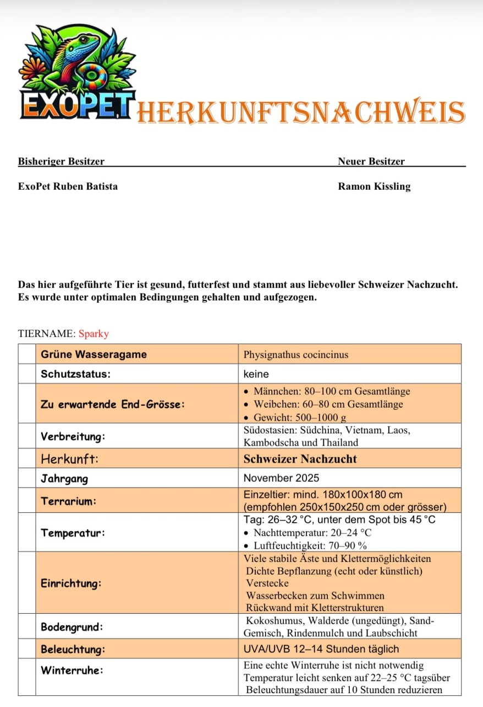

Basics
Grösse: ca. 80–100 cm (viel Schwanz)
Alter: meist 10–15 Jahre
Charakter: eher ruhig, kletternd, beobachtend
Terrarium
Minimum: 180x80x180 cm
Meines: 200x100x200 cm (viel Platz zum Klettern und Erkunden)
Viele Kletteräste und Pflanzen
Grosser Wasserteil 120x80x45 cm
Rückwand zum Klettern
Klima
Tag: 26–32°C, Sonnenplatz bis 45°C
Nacht: 20–24°C
Luftfeuchte: 70–90 % (Beregnung wichtig)
Technik
UVB-Lampe (sehr wichtig!)
Mehrere Wärmelampen
Beregnungsanlage für die Luftfeuchtigkeit und Pflanzen
Filter für den Wasserteil
Futter
Insekten (Heimchen, Honig Maden,Mehl Würmer Heuschrecken)
Ab und zu Früchte oder etwas Grünfutter
Vitamine und Calcium (sehr wichtig!)
Verhalten
Guter Kletterer und Schwimmer
Wird mit der Zeit zutraulich, aber es ist kein Kuscheltier
Nutzt Höhe und Wasser, sehr aktiv im Terrarium
